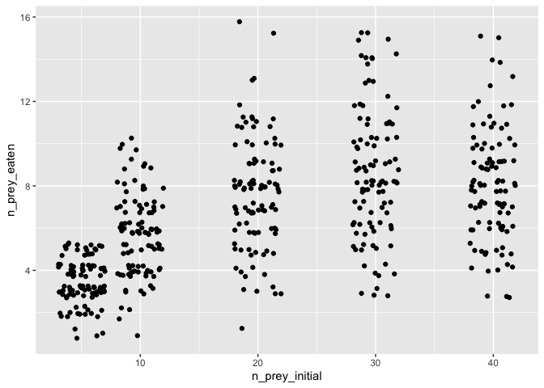
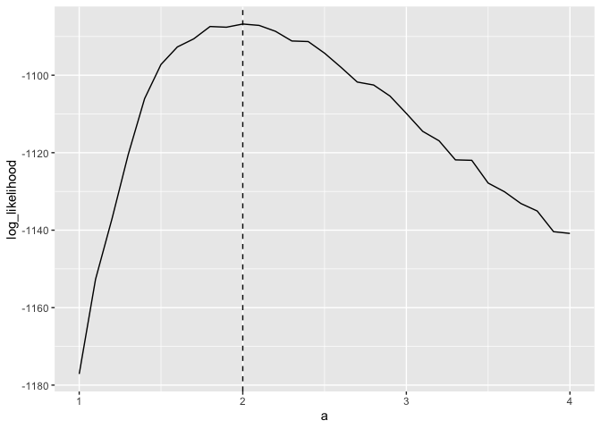

The goal of frbayes is to estimate functional response models using stochastic models of population dynamics.
Installation
You can install the development version of frbayes from GitHub with:
# install.packages("devtools")
devtools::install_github("ben18785/frbayes")Example
We first show how we can examine the fit of a functional response model to synthetically generated data, where the parameters of the process are known. We assume that data generating process is a stochastic Rogers-II-type model, where the process is assumed to follow a chemical reaction equation of the form:
where the rate of this reaction is given by:
where is a capture rate and is a handling time. Here, we assume in our synthetic data that and .
We suppose that 100 replicates were performed at initial prey counts of: 5, 10, 20, 30, 40, and we generate a possible observed dataset for this experimental setup.
library(frbayes)
#>
#> Attaching package: 'frbayes'
#> The following object is masked from 'package:stats':
#>
#> simulate
library(ggplot2)
library(purrr)
library(dplyr)
#>
#> Attaching package: 'dplyr'
#> The following objects are masked from 'package:stats':
#>
#> filter, lag
#> The following objects are masked from 'package:base':
#>
#> intersect, setdiff, setequal, union
library(tidyr)
# experiment details
experimental_setup <- data.frame(
n_prey_initial = c(5, 10, 20, 30, 40),
n_replicates = 100
)
# generate synthetic data
true_parameters <- list(a = 2, h = 0.1)
df <- simulate_study(
data = experimental_setup,
time_max = 1,
model = model_rogersII(),
parameters = true_parameters
)
# plot data
df %>%
ggplot(aes(x = n_prey_initial, y = n_prey_eaten)) +
geom_jitter(height = 0.3)
We now assess the likelihood using the log_probability function. We show how the log-likelihood varies as is varied with fixed at its true value.
as <- seq(1, 4, 0.1)
log_likelihood <- vector(length = length(as))
for (i in seq_along(as)) {
parameters <- list(a = as[i], h = true_parameters$h)
log_likelihood[i] <- log_probability(
parameters = parameters,
data = df,
model = model_rogersII(),
n_replicates = 10000
)
}
# plot
tibble(a = as, log_likelihood = log_likelihood) %>%
ggplot(aes(x = a, y = log_likelihood)) +
geom_line() +
geom_vline(xintercept = true_parameters$a, linetype = 2)